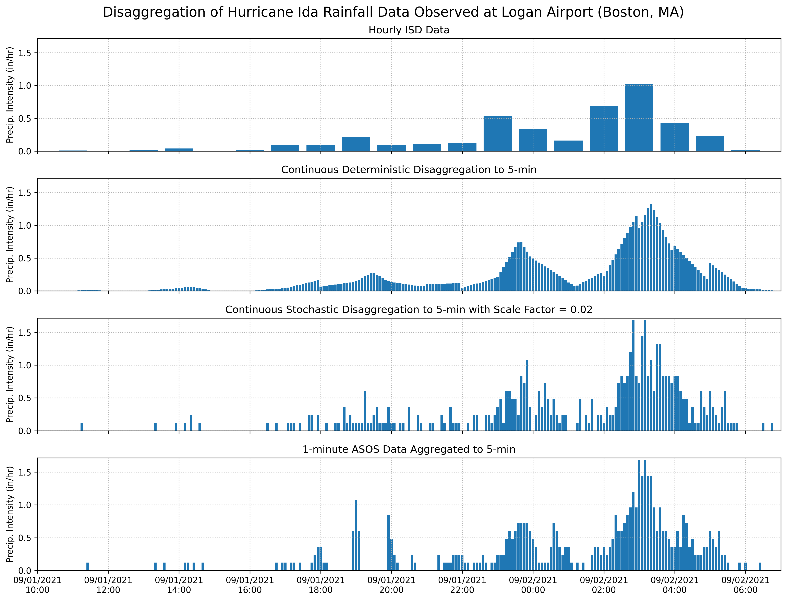

Hourly Rainfall Disaggregation#
[1]:
from storms.precip.datasets import LoganFreeForm
from storms import Raingage
import pandas as pd
import matplotlib.pyplot as plt
import matplotlib.dates as mdates
c:\users\ckaros\src\storms\storms\_datasource.py:15: TqdmExperimentalWarning: Using `tqdm.autonotebook.tqdm` in notebook mode. Use `tqdm.tqdm` instead to force console mode (e.g. in jupyter console)
from tqdm.autonotebook import tqdm
[2]:
# pull ASOS 1-minute data for tropical storm Ida
asos = Raingage.from_asos('BOS','8/30/2021','9/10/2021')
[3]:
# aggregate to 5-minutes and find event total
asos.data.index = asos.data.index + pd.Timedelta('1H')
asos.aggregate('5T',inplace=True)
asos.find_events(inter_event_period=12,threshold_depth=0)
[3]:
| event_num | event_total | start_date | event_start_index | event_end_index | hours_duration | event_max | event_records | |
|---|---|---|---|---|---|---|---|---|
| 0 | 1 | 0.02 | 2021-08-30 23:05:00 | 0 | 2 | 0.166667 | 0.01 | 2 |
| 1 | 2 | 4.23 | 2021-09-01 11:25:00 | 2 | 125 | 19.083333 | 0.14 | 123 |
| 2 | 3 | 0.04 | 2021-09-05 11:35:00 | 125 | 129 | 12.750000 | 0.01 | 4 |
| 3 | 4 | 0.96 | 2021-09-09 05:55:00 | 129 | 183 | 19.083333 | 0.12 | 55 |
[4]:
# load in hourly data from included boston dataset
rg =Raingage.from_ff(LoganFreeForm,freq='1H')
# disaggreate with various methods
cont_deter=rg.disaggregate('5T','geometric_deterministic',inplace = False)
cont_stoc=rg.disaggregate('5T','geometric_stochastic',inplace = False, scale_factor=0.02)
# compute event totals
cont_deter.find_events(inter_event_period=12,threshold_depth=0)
cont_stoc.find_events(inter_event_period=12,threshold_depth=0)
rg.find_events(inter_event_period=12,threshold_depth=0)
[4]:
| event_num | event_total | start_date | event_start_index | event_end_index | hours_duration | event_max | event_records | |
|---|---|---|---|---|---|---|---|---|
| 0 | 1 | 0.03 | 1894-01-05 14:00:00 | 0 | 2 | 2.0 | 0.02 | 2 |
| 1 | 2 | 0.03 | 1894-01-06 21:00:00 | 2 | 4 | 3.0 | 0.02 | 2 |
| 2 | 3 | 0.15 | 1894-01-10 16:00:00 | 4 | 13 | 13.0 | 0.03 | 9 |
| 3 | 4 | 0.09 | 1894-01-11 18:00:00 | 13 | 17 | 7.0 | 0.04 | 4 |
| 4 | 5 | 0.25 | 1894-01-15 23:00:00 | 17 | 26 | 9.0 | 0.05 | 9 |
| ... | ... | ... | ... | ... | ... | ... | ... | ... |
| 11621 | 11622 | 0.31 | 2021-09-16 06:00:00 | 88598 | 88601 | 3.0 | 0.29 | 3 |
| 11622 | 11623 | 0.34 | 2021-09-18 22:00:00 | 88601 | 88605 | 6.0 | 0.15 | 4 |
| 11623 | 11624 | 0.03 | 2021-09-23 12:00:00 | 88605 | 88606 | 1.0 | 0.03 | 1 |
| 11624 | 11625 | 0.58 | 2021-09-25 19:00:00 | 88606 | 88612 | 12.0 | 0.32 | 6 |
| 11625 | 11626 | 0.72 | 2021-09-28 10:00:00 | 88612 | 88620 | 11.0 | 0.17 | 9 |
11626 rows × 8 columns
[5]:
one_hour = 1/24
event = 37
fig,axs = plt.subplots(4,1,figsize=(13,10),dpi=300,sharex=True)
# hourly
axs[0].bar(rg.get_event_by_rank(event).index,rg.get_event_by_rank(event).to_numpy(),width=one_hour*0.8)
# deterministic
axs[1].bar(cont_deter.get_event_by_rank(event).index,cont_deter.get_event_by_rank(event).to_numpy()*12,width=one_hour/12*0.8)
# stochastic
axs[2].bar(cont_stoc.get_event_by_rank(event).index,cont_stoc.get_event_by_rank(event).to_numpy()*12,width=one_hour/12*0.8)
# ASOS
axs[3].bar(asos.get_event_by_rank(1).index,asos.get_event_by_rank(1).to_numpy()*12,width=one_hour/12*0.8)
# plot format
myFmt = mdates.DateFormatter('%m/%d/%Y\n%H:%M')
for ax in axs:
ax.grid(ls=':')
ax.set_ylim(0,cont_stoc.get_event_by_rank(event-1).max()*12*1.1)
ax.set_xlim(rg.get_event_by_rank(event).index.min() - pd.Timedelta('1H'),rg.get_event_by_rank(event).index.max()+pd.Timedelta('1H'))
ax.xaxis.set_major_formatter(myFmt)
ax.set_ylabel('Precip. Intensity (in/hr)')
axs[0].set_title('Hourly ISD Data')
axs[1].set_title('Continuous Deterministic Disaggregation to 5-min')
axs[2].set_title('Continuous Stochastic Disaggregation to 5-min with Scale Factor = 0.02')
axs[3].set_title('1-minute ASOS Data Aggregated to 5-min')
fig.suptitle("Disaggregation of Hurricane Ida Rainfall Data Observed at Logan Airport (Boston, MA)",size=16)
fig.tight_layout()
